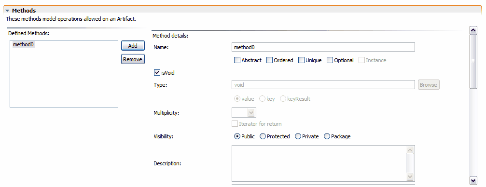

Session Facade Methods
To edit Artifact methods, expand the Methods section in the Tigerstripe Session Artifact editor. The Methods section is shown below:

To add a method:
- Click Add. A sample method is created and the detailed information for the newly created method displays in the Session Artifact editor.
To remove a method:
- Select the method from the list of defined methods.
- Click Remove. A confirmation dialog appears to confirm the removal of the selected method.
To edit a method:
- Select the method from the list of defined methods.
The detailed view for the selected method displays. You can edit the following method information:
- Method Name: the name of the method. The method name must be a valid identifier that is unique within the scope of the Artifact.
- Method Modifiers:
- Abstract
- Ordered
- Unique
- Optional: a method marked as optional means that the method may not be implemented, however it is still compliant with the Service Contract.
- Instance: This option is not applicable for Session Facade artifacts.
- Method Return Type: the return type for the method.
- Method Visibility: specifies the visibility of the method.
- Method Description: a textual description of the method. This field documents the purpose of the method. You can use HTML code in this field as it will be propagated into the web site where the project is to be published, as well as in the generated code. For more details on Artifact documentation, refer to Tigerstripe Model Documentation.
- Method Arguments: to define the list of arguments for the method. The following options are available:
- Add/Remove: use this option to add or remove arguments.
- Edit: use this option to edit the details of an argument
- Up/Down: use this option to change the order of the arguments
- Method Exceptions: to define the list of exceptions to be thrown by this method. Add or remove exceptions to the list with the corresponding buttons.
Related Topics
Creating Session Facade Artifacts
Editing Session Facade Artifacts
Session Facade General Information
Session Facade Implementation Specifics
 Session Facade Implementation Specifics
Session Facade Implementation Specifics
© copyright 2005, 2006, 2007 Cisco Systems, Inc. - All rights reserved